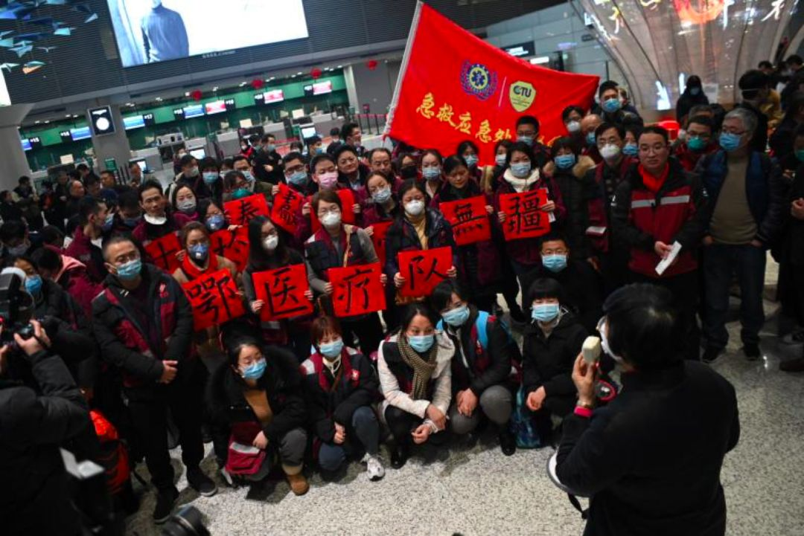
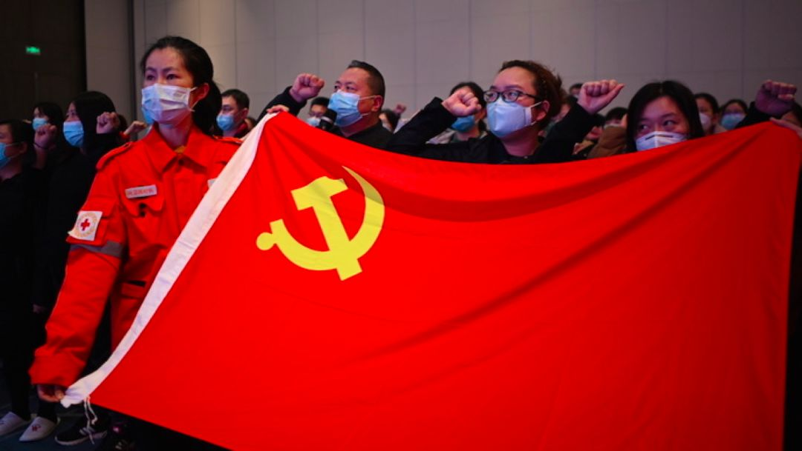
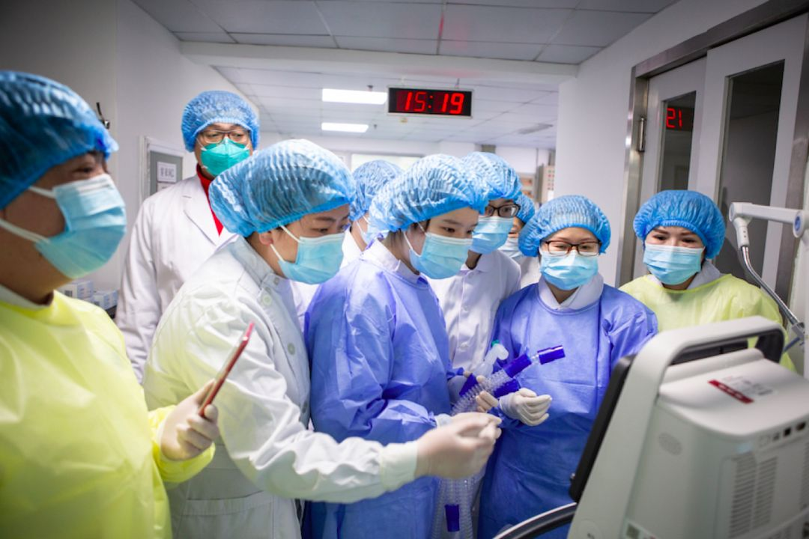

广东医疗队援汉日记：带上SARS防治经验，进入武汉疫区
原文链接 备份链接 *************▲*************广东医疗队医生在会诊病情。（采访对象供图/图） 全文共*5409*字，阅读大约需要13分钟。 在生与死构筑的无奈当中，也有些闪着人性之光的事情。医护人员发现，在 …
2月4日下午，《新民周刊》连线了正在一线的第一批上海援鄂医疗队领队、临时党总支书记、上海市第一人民医院副院长郑军华，了解第一批上海援鄂医疗队在武汉金银潭医院的具体情况，也澄清了现在社会上的对于医疗队安全保障的关切。
郑军华表示，医疗队经过十多天的磨合，已经达到了基本默契，也形成了团队精神，目前每个人都在努力地工作，希望更多更好地治疗好病人，并降低死亡率。其中医务人员的防护工作是第一重要的，因为只有医务人员健康，才能救治更多的病人，他希望每个人都能安安全全地来，安安全全地返回上海。
记者 | 周 洁

新民周刊：第一批上海援鄂医疗队奔赴武汉已经将近两周时间了，我们对于疾病的认识、救治的策略，是不是有了一些经验？
郑军华：我们是除夕夜里出发的，到今天（2月4日）差不多已经12天了。我们到了以后，全体队员都经受了很大的考验，尤其是要克服内心的恐惧。但是经过十几天的工作，医护人员对于疾病的诊断和治疗已经有了进一步的了解，也积累了一些经验。
我们的医疗队负责金银潭医院北二楼和北三楼两个病区60余位病人，截至2月4日，已经有4例治愈出院。目前一线临床治疗的病人，我们每天都会分析所有的临床资料来决定我们的治疗方案。
从现在来看，重症的病人大概是在10%~20%的比例，国家卫建委的数据显示，全国新冠肺炎患者死亡率是2.1%，武汉的数据高一些，是4.9%。80%的病人只要“早发现、早报告、早隔离、早治疗”，都可以取得一个非常好的治疗效果。
对于确诊的病人来说，首先是要增强他的免疫力；其次是做一些对症的治疗。在药物的选择上目前有一些新的方案，但是否有效还需要进一步的临床的询证医学证据，我们也在进一步观察。
另外，我们的医疗队目前救治的都是危重病人，有一个非常显著的表现，就是肺部受损明显、有明显的低氧血症，呼吸衰竭和伴多器官功能衰竭。我们会根据病人的病情——缺氧情况、呼吸衰竭的严重度来采取不同的呼吸支持的方法，包括鼻导管吸氧、高流量氧气治疗、气管插管、呼吸机、无创呼吸机、有创呼吸机甚至是肺复张或体外膜肺氧合（ECMO）等。

郑军华（左二）和首批康复出院的患者合影
新民周刊：目前金银潭医院医疗力量够吗？
郑军华：金银潭医院目前是集中收治危重病人最多的医院，也集合了目前国内呼吸科、重症医学科的各路专家和精英，我们有三支各地来支援的医疗队，包括上海医疗队、北京医疗队、福建医疗队（接替陆军军医大学医疗队），同时有来自于武汉人民医院、同济医院和协和医院，还有国家级重症治疗专家组。我们共同来面对这个疾病，参与治疗。
随着目前国家院士级专家还有各种行业内专家对于新型冠状病毒的认识不断加深，我们能够更好地掌握防控的特点，不断地了解这个疾病。李兰娟院士对于危重病人治疗提出的“四抗二平衡”的救治方案和国家第五版诊疗指南，我们也在学习和落实之中。而我们医疗队在临床上的一些有关核酸检测的转阴特点和变化，也对我们治疗病人和判断病情，更好地做好防控工作提供了借鉴。比如对于易感人群的判断，以前可能普遍认为是年纪大的，合并多种基础疾病的人为主，但现在相应增加了儿童和孕妇。
目前，武汉市政府也对“四类人员”分类集中收治和隔离，特别是方舱医院的建设，相比于居家隔离，我相信对于疾病控制是能起到更积极的效果。毕竟大多数家庭对于疾病防控的医学知识并不是非常了解，特别是防疫方面的消毒知识有限，所以武汉市的这一措施应当会对疫情发展起到关键作用。

《新民周刊》：目前我们医疗队的医护人员们工作状态怎么样？如何保证他们能够长期高效地工作？
郑军华：我们的医疗队对于疾病的治疗，正在不断积累经验，我们也在不断改善我们的流程，找差距，补短板，持续改进。我们要认识到疫情是有长期性、复杂性和严峻性的，我们也要充分地保护我们医护人员，有精力和体力去面对这样的挑战。
1月27日上海市卫健委为我们补充了50名护理成员，其中35名抽调到了金银潭医院其他病区，另外15名纳入了我们的一体化管理，负责两个病区的轮转。因为病区里没有护工，我们的护士不仅需要负责医学护理，还需要做生活护理。所以在我们护理力量有所增加的情况下，把第一线最辛苦的护士岗位的工作时间，调整到了4小时一班，希望在这样的调整后，医护人员能够上得了战场，也能在工作结束后获得更多的休息。
另外，为了让我们的医护人员能够长期高效地工作，我们也做了一些努力。我们建立了党总支，要求党员走在抗疫情的第一线，充分发挥党员的先锋模范作用和党支部的战斗堡垒作用。这次136名队员里面有59名党员，1名预备党员，我们召开了全体党员会议，上党课时，当场就有8名入党积极分子要求火线入党，会后到目前大概已经收到了40多名同志的入党申请。

1月28日晚，上海市援鄂医疗队举办全体党员第一次会议
另外我们全体医护人员身心健康。
我举两个例子。这两天，有一些过生日的队员，我们一起给他们搞了一个简单的仪式，过一个小型的生日，大家心里暖暖的，也稍微放松了一下。另外，因为我们刚刚来的时候，有些女同志的头发比较长，不利于开展相关的防护措施，于是我们有一位女同志就自愿帮大家剪头发。作为一个团队，我们相互尊重、相互关心、相互理解、相互支持。大家经过一段时间的磨合以后，应该说到了一个基本默契的阶段。
在物质保障方面，我们受到了来自上海市委、市政府、卫健委和申康医院发展中心的大力支持，特别是我们队员所在的医院的支持，也非常感谢来自于全国各地的企业、团体、基金会、个人给予我们的慰问和支持。这里面也可以讲一个事情，就是光明集团给我们所有在上海的家属送菜、送粮、送牛奶等等，我们队员家属也非常感动，非常感谢，还有上海市医务工会、盒马生鲜、美团、绿地等，我一下子说不全，总之，在社会各界的关心下，我们队员非常有信心去战胜疫情。

2月2日，上海援鄂医疗队的医务人员与市委书记李强视频连线
《新民周刊》：疫情还在发展，我们的医护人员也工作了将近两周的时间，大概什么时候能够有轮替和休息呢？
郑军华：我们觉得现在还不必要。因为我们也是刚刚到了没多久，大家也下了决心，既然来了，受到上海市政府的派遣，我们一定要把工作做好，我们没有想过后面轮换休息，这个时候也不应该马上就休息。我们还是应该战斗在第一线，况且我们这支队伍刚刚才开始熟悉和了解抗疫的相关经验。
新来的医疗队都有一个磨合的过程，我们目前形成一个团结协作的团队，我们更应该做的是把时间用于救治病人。上海第三批援鄂医疗队的领队、瑞金医院陈尔真副院长说：不破楼兰誓不还。其实这也是我们的想法，我们一定会不辱使命。

《新民周刊》：在武汉工作的这两周里，您个人最大的感受是什么？
郑军华：我内心有四点感受，非常深刻。
我最大的感受是，确实感到了我们党的坚强领导、我们社会主义制度的优势，也更加树立了四个意识，四个自信，坚定两个维护。
现在武汉有8000多名来自于全国29个省市自治区的医疗队成员，同时还有来自于军方的医疗队。没有一个国家能够像中国那样有坚决的贯彻执行力。
第二点，目前抗击疫情的防治体系正在形成过程中，身处历史之中的我们，确确实实感受到了我们政府的高效，刚开始可能对疫情有一个认识过程，但现在已经把抗击疫情作为一个最主要、最重要的工作在抓了。
我接触到的当地区政府人员，他们为了保障我们的生活需要，做了最大的努力。特别是对我们的住所、生活、通勤、安全等方面，也提供了全方面的后勤保障。
第三点，我也充分感受到了我们全国医务工作者的精神风貌。在国家的号召下，没有一家医院，没有一个医务人员是退缩的，这也体现了医护人员的使命感、责任感——疫情就是命令。
第四点，就是我充分感受到了中国文化中“一方有难、八方支援”的精神。很多的企业、团队、个人，在疫情发生以后都尽自己最大的力量提供支持。很多国外的华侨、留学生都想尽办法帮助解决我们医疗物资保障，特别是N95的口罩、医疗防护服、护目镜等等方面。我们大家共同去抗击疫情，武汉，不是一个孤城，全国人民支持你们，这一点，我的感受是非常深的。
（图片：上观新闻）
征集令
“战疫”成败，匹夫有责。
《新民周刊》现面向全国征集新冠肺炎采访对象和真实故事：
如果你是参与抗击新冠肺炎疫情的医护人员或其家属，我们希望聆听你的“战役”故事，也希望传达你的诉求。
如果你是确诊、疑似患者本人或家属，我们希望了解你和家人如何“抗疫”的过程，让外界了解你的真实经历。
如果你是疫情严重地区的普通市民，我们希望展现你的乐观，并倾听你所需的帮助。
如果你是公共服务人员或各类捐助者，我们希望看到你的“最美逆行”，记录下你的无私。
……
抗击新冠肺炎疫情，我们诚征对疫情了解的社会各界人士，提供相关线索，说出你的故事，让我们用新闻留存这一切。
《新民周刊》新冠肺炎线索征集值班编辑联系方式（添加时请简要自我介绍）：
周一：应 琛 微信号：paulineying0127
周二：金 姬 微信号：gepetta
周三：黄 祺 微信号：wxid_bf5mudid7oz322
周四：周 洁 微信号：asyouasyou
周五：孔冰欣 微信号：kbx875055141
周六：吴 雪 微信号：shyshine1105
周日：姜浩峰 微信号：jianggeladandong
新闻是历史的底稿，你们是历史的见证者。期待你的故事、你的线索！

▼
大家还都在看这些
▼
转载请在评论区留言，获得授权！
转载时，须注明作者、出处和微信号


原文链接 备份链接 *************▲*************广东医疗队医生在会诊病情。（采访对象供图/图） 全文共*5409*字，阅读大约需要13分钟。 在生与死构筑的无奈当中，也有些闪着人性之光的事情。医护人员发现，在 …
原文链接 备份链接 编者按： 8天时间，一座可容纳1000张床位的医院正式落成。这就是参照2003年非典期间北京小汤山医院所建的火神山医院。明天，这所医院就将收治病人。 据悉，该医院主要救治确诊患者，开设重症监护病区、重症病区、普通病区， …
原文链接 备份链接 *************▲************* 刘大钺。 （采访对象供图/图） 全文共*2013*字，阅读大约需要5分钟。 各地支援的物资已经是到了，一问，说这东西还有很多，但是找谁领，不知道，这个渠道不太 …
原文链接 备份链接 “一百多人来自上海不同的医院，大家首先要内部磨合，我们的医护人员还要与武汉当地医护人员磨合。我们计划用3-5天来完成磨合，然后科学分配，提高工作效率。” 文 | 黄 祺 今日全国新冠肺炎确诊人数过万，武汉的重症患者还在 …
原文链接 备份链接 “1月31日，最新通知下来了，由于医院各科室医护人员减员情况严重，医院决定每个科室留5名医生倒班，每班6小时。这样的值班时长对于已经连续奋战了10天的医护人员来说危险系数很高。但医护人员现在不允许请假，除非被感染。” …